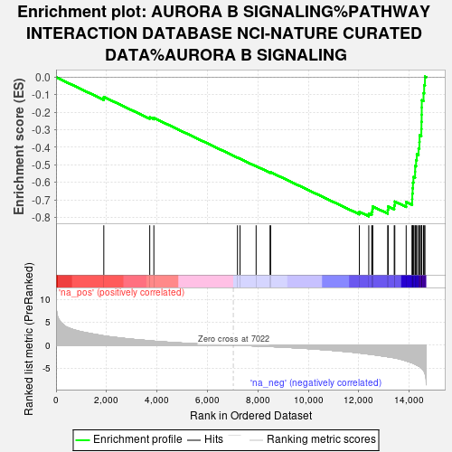
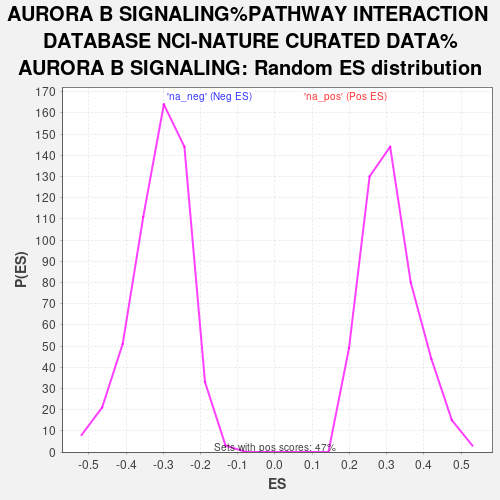

| | | Dataset | Control_vs_GWTreated |
| Phenotype | NoPhenotypeAvailable |
| Upregulated in class | na_neg |
| GeneSet | AURORA B SIGNALING%PATHWAY INTERACTION DATABASE NCI-NATURE CURATED DATA%AURORA B SIGNALING |
| Enrichment Score (ES) | -0.79329437 |
| Normalized Enrichment Score (NES) | -2.5795624 |
| Nominal p-value | 0.0 |
| FDR q-value | 0.0 |
| FWER p-Value | 0.0 |
Table: GSEA Results Summary

Fig 1: Enrichment plot: AURORA B SIGNALING%PATHWAY INTERACTION DATABASE NCI-NATURE CURATED DATA%AURORA B SIGNALING
Profile of the Running ES Score & Positions of GeneSet Members on the Rank Ordered List
| SYMBOL | RANK IN GENE LIST | RANK METRIC SCORE | RUNNING ES | CORE ENRICHMENT | | 1 | H3-3B | 1892 | 2.032 | -0.1124 | No |
| 2 | AURKC | 3713 | 0.967 | -0.2287 | No |
| 3 | PSMA3 | 3876 | 0.884 | -0.2324 | No |
| 4 | KLHL9 | 7190 | -0.025 | -0.4586 | No |
| 5 | RHOA | 7291 | -0.042 | -0.4651 | No |
| 6 | TACC1 | 7928 | -0.161 | -0.5072 | No |
| 7 | NPM1 | 8481 | -0.285 | -0.5426 | No |
| 8 | PPP2R5D | 8503 | -0.289 | -0.5416 | No |
| 9 | NCL | 12019 | -1.674 | -0.7679 | No |
| 10 | NSUN2 | 12392 | -1.925 | -0.7773 | Yes |
| 11 | PEBP1 | 12510 | -2.009 | -0.7685 | Yes |
| 12 | KLHL13 | 12537 | -2.025 | -0.7534 | Yes |
| 13 | MYLK | 12547 | -2.033 | -0.7371 | Yes |
| 14 | CUL3 | 13144 | -2.505 | -0.7570 | Yes |
| 15 | CBX5 | 13160 | -2.520 | -0.7370 | Yes |
| 16 | PPP1CC | 13401 | -2.736 | -0.7307 | Yes |
| 17 | NCAPD2 | 13424 | -2.757 | -0.7092 | Yes |
| 18 | SGO1 | 13874 | -3.382 | -0.7117 | Yes |
| 19 | CENPA | 14111 | -3.819 | -0.6961 | Yes |
| 20 | AURKB | 14117 | -3.840 | -0.6644 | Yes |
| 21 | EVI5 | 14129 | -3.864 | -0.6330 | Yes |
| 22 | INCENP | 14142 | -3.903 | -0.6013 | Yes |
| 23 | RASA1 | 14161 | -3.943 | -0.5697 | Yes |
| 24 | BUB1 | 14227 | -4.114 | -0.5399 | Yes |
| 25 | KIF2C | 14230 | -4.118 | -0.5058 | Yes |
| 26 | STMN1 | 14267 | -4.217 | -0.4731 | Yes |
| 27 | KIF20A | 14295 | -4.309 | -0.4391 | Yes |
| 28 | NCAPH | 14365 | -4.504 | -0.4063 | Yes |
| 29 | CDCA8 | 14398 | -4.601 | -0.3702 | Yes |
| 30 | AURKA | 14405 | -4.628 | -0.3321 | Yes |
| 31 | BIRC5 | 14475 | -4.920 | -0.2958 | Yes |
| 32 | NDC80 | 14480 | -4.943 | -0.2549 | Yes |
| 33 | SMC2 | 14488 | -4.976 | -0.2140 | Yes |
| 34 | RACGAP1 | 14491 | -4.983 | -0.1726 | Yes |
| 35 | NCAPG | 14493 | -4.987 | -0.1312 | Yes |
| 36 | SMC4 | 14562 | -5.404 | -0.0908 | Yes |
| 37 | KIF23 | 14587 | -5.662 | -0.0453 | Yes |
| 38 | VIM | 14619 | -6.117 | 0.0035 | Yes |
Table: GSEA details [plain text format]

Fig 2: AURORA B SIGNALING%PATHWAY INTERACTION DATABASE NCI-NATURE CURATED DATA%AURORA B SIGNALING: Random ES distribution
Gene set null distribution of ES for AURORA B SIGNALING%PATHWAY INTERACTION DATABASE NCI-NATURE CURATED DATA%AURORA B SIGNALING